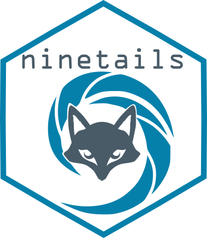

Extracts poly(A)/poly(T) tail signals of Dorado cDNA reads for training-set preparation, split by read orientation.
Source:R/ninetails_training_dataset_production_functions_cdna.R
extract_tail_signals_trainingset_cdna.RdThis is the cDNA counterpart of the fast5/nanopolish-based read
extraction performed inside create_tail_feature_list_trainingset.
It filters the Dorado summary with filter_dorado_summary,
optionally restricts the reads to the contigs of interest (the spike-in
constructs whose tail composition is known from the experimental design),
extracts basecalled sequences from the BAM file with
extract_data_from_bam, classifies the read orientation with
detect_orientation_single, and extracts the winsorized and
downsampled tail signals from POD5 files with
extract_tails_from_pod5.
Usage
extract_tail_signals_trainingset_cdna(
dorado_summary,
bam_file,
pod5_dir,
num_cores = 1,
contig = NA
)Arguments
- dorado_summary
Character string or data frame. Full path of the Dorado summary file (
dorado summaryrun on the aligned BAM with poly(A) estimation enabled) or the already loaded data frame. Must containread_id,filename(orinput_filename),poly_tail_length,poly_tail_start,poly_tail_end,alignment_genome,alignment_directionandalignment_mapq.- bam_file
Character string. Full path of the aligned BAM file with basecalled sequences and Dorado
pt/patags.- pod5_dir
Character string. Full path of the directory containing POD5 files referenced in the summary.
- num_cores
Numeric
[1]. Number of physical cores to use for the POD5 extraction. Do not exceed 1 less than the number of cores at your disposal.- contig
Character vector
[NA]. Names of the reference contigs (alignment_genome) to retain. Use it to select the reads mapping to the construct carrying the residue of interest. IfNA, all mapped reads are retained.
Value
A named list with three elements:
- polya_signals
Named list of numeric vectors. Tail signals of reads classified as polyA, named by read ID.
- polyt_signals
Named list of numeric vectors. Tail signals of reads classified as polyT, named by read ID.
- read_annotation
Data frame with one row per extracted read:
read_id,contig,tail_type(polyA, polyT or unidentified),poly_tail_length,poly_tail_start,poly_tail_endandsignal_length(data points after downsampling). Use it as a lookup to verify that the reads come from the expected construct and orientation.
Reads classified as unidentified are listed in read_annotation
but their signals are not returned. Always assign this returned list to
a variable; printing the full list to the console may crash the R session.
Details
The signal extraction is delegated to the same Python helper as the
production cDNA pipeline, so the resulting signals are winsorized
(0.5% and 99.5% percentiles) and interpolated to 20% of their
original length, exactly as in extract_tail_data_trainingset.
Reads whose signal could not be extracted (empty vectors) are dropped.
No signal reversal is applied. In polyA orientation the tail signal runs from the transcript body towards the 3' end, in polyT orientation it runs from the 3' end (right after the VNP primer) towards the body and every residue is observed as its complement. Keep this in mind when inspecting the signals; the downstream models are orientation-specific.
See also
create_tail_feature_list_trainingset_cdna for the
next pipeline step,
extract_tails_from_pod5 for the signal extraction,
detect_orientation_single for the orientation call,
prepare_trainingset_cdna for the top-level wrapper.